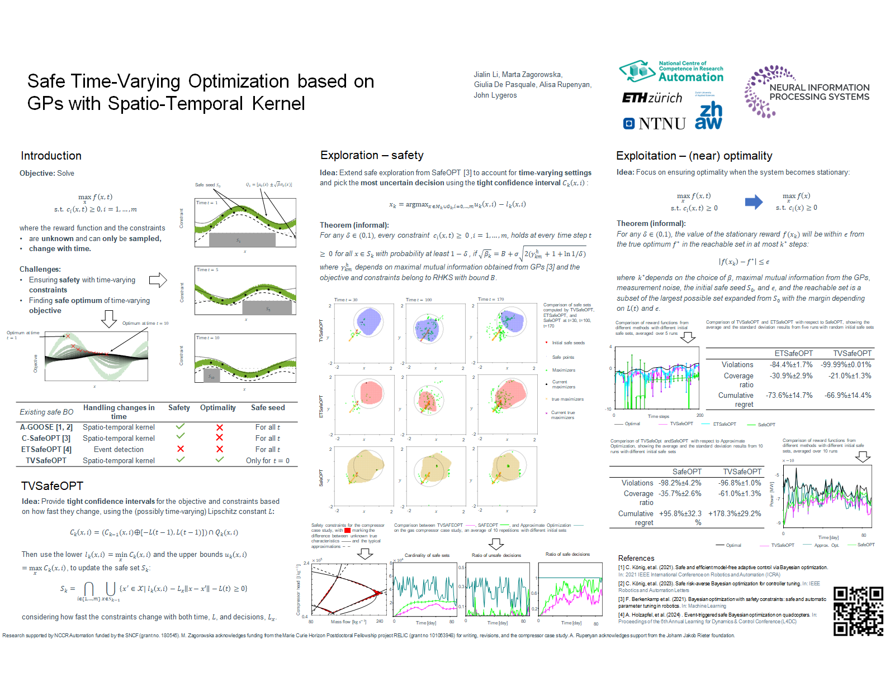

|
Jialin Li 李嘉麟 I am a second-year Ph.D. student affiliated with the MechSE Department at University of Illinois Urbana-Champaign, advised by Prof. Naira Hovakimyan. I received my M.S. degree in Robotics, Systems, and Control with distinction from ETH Zurich in 2024, where I finished my master's thesis on Time-Varying Safe Bayesian Optimization at the Automatic Control Laboratory, advised by Prof. Dr. John Lygeros. Before that, I obtained my B.S. degree in Theoretical and Applied Mechanics with summa cum laude from University of Science and Technology of China in 2021. I interned at Bosch Center for Artificial Intelligence (BCAI) in Renningen, Germany in 2024. |

|
ResearchMy research focuses on designing, analyzing, and evaluating sequential decision-making algorithms that enable dynamical systems to leverage generative models for robust planning and continuously learn from actively acquired experiences in a safe and scalable manner, with the goal of advancing autonomous driving and generalist robots. |
Publications |
|  |
Safe Time-Varying Optimization based on Gaussian Processes with Spatio-Temporal Kernel |
Academic Service |
|
Reviewer, Learning for Dynamics & Control Conference (L4DC) 2025
Reviewer, IEEE Robotics and Automation Letters (RA-L) 2021 |
Teaching |
|
Teaching Assistant, UIUC ME 340 Dynamics of Mechanical Systems 2024 Fall, 2025 Spring, 2025 Fall
Teaching Assistant, ETHz Probabilistic Artificial Intelligence 2022 |
|
Based on this website. |